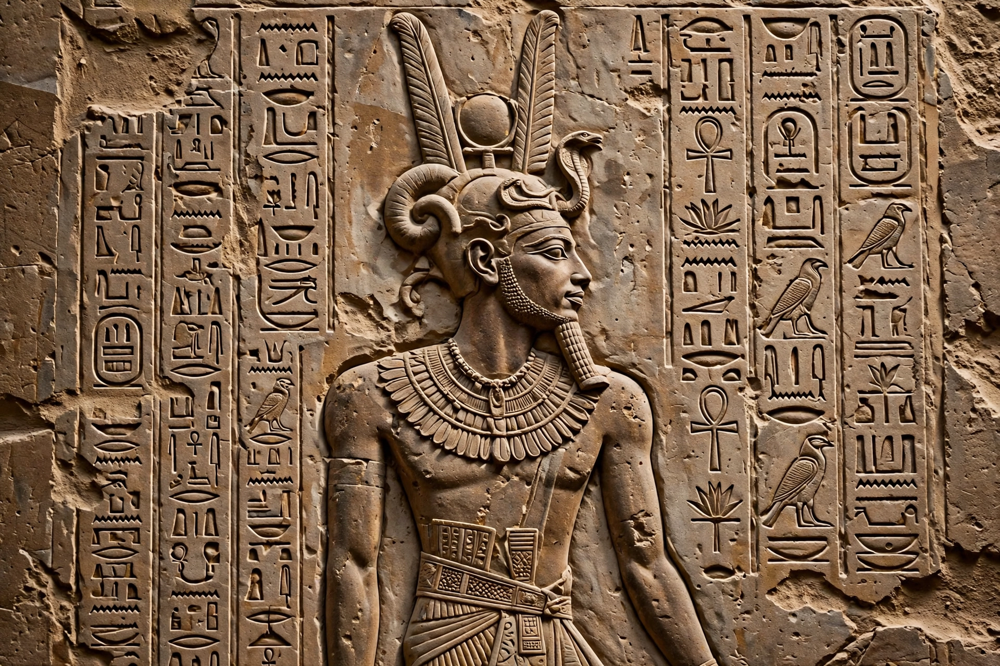

| Piye | |
|---|---|
| Reign | c. 747–716 BC |
| Predecessor | Kashta |
| Successor | Shebitku (or Shabaka) |
| Dynasty | 25th Dynasty (Kushite) |
| Father | Kashta |
| Burial | el-Kurru, pyramid Ku. 17 |

Piye (also spelled Piankhi; died c. 716 BC) was an ancient Kushite king and the founder of the Twenty-fifth Dynasty of Egypt, who ruled Egypt from the city of Napata in Nubia. He invaded Egypt from the south, conquering the fragmented kingdoms of the Third Intermediate Period and uniting the country under Kushite rule.
Piye was the son of Kashta, who had extended Kushite influence northward to Thebes, where his daughter Amenirdis I was installed as heiress to the God's Wife of Amun. From his capital at Napata, near the Fourth Cataract of the Nile, Piye regarded himself as the true defender of the cult of Amun and of traditional Egyptian religion.
Around 727 BC, a coalition of northern rulers led by Tefnakht of Sais expanded southward, threatening Thebes and Hermopolis. Piye first sent an army north, then in his regnal year 20 (c. 727 BC) personally led a campaign down the Nile. His forces defeated the coalition at Herakleopolis, besieged Hermopolis — whose king Nimlot submitted — captured Memphis after a hard siege, and received the submission of the Delta princes, including Tefnakht. The campaign is recorded in detail on the Victory Stela of Piye, erected at Jebel Barkal. Notably, Piye allowed the defeated local rulers to remain in office as vassals and returned to Napata rather than residing in Egypt.
Piye expanded the temple of Amun at Jebel Barkal and built at el-Kurru, where he was buried in pyramid Ku. 17 — the first pharaoh to be buried in a pyramid in over a thousand years, reviving the custom. He was devoted to horses, which were buried beside his pyramid. His successors Shabaka and Taharqa consolidated Kushite rule over Egypt, creating a double kingdom stretching from central Sudan to the Mediterranean.